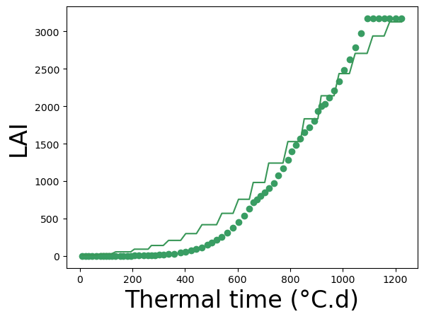
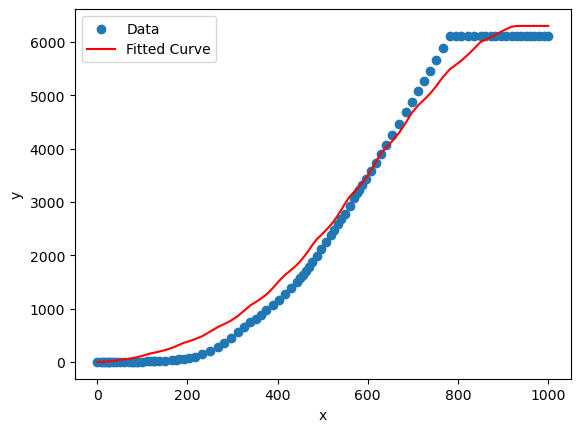
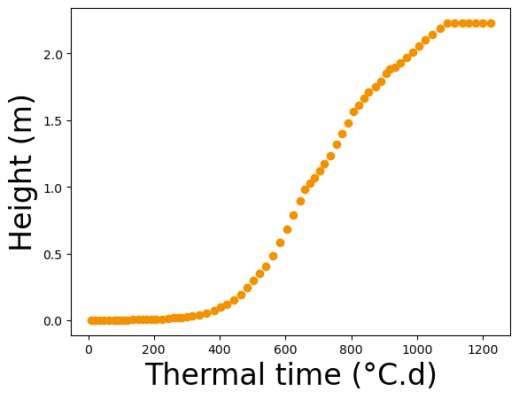

The main stem grows according to the crop model’s plant height.
The appearance of a leaf is triggered by fixed phyllochron (different for tillers?).
The angle of the leaf with its axis is leaf-age dependent. The leaf blade curvature depends on the angle with the axis and the leaf length.
The reproductive organs appear from a given thermal time, when the leaves have stopped growing. Leaf senescence is constrained by crop model, as it has a direct influence on LAI (green LAI vs. yellow LAI ?).
The branching pattern is set (Tillers (Zhu et al., 2015)).
\(\mathcal{A}\) : final leaf area (or surface), in \(cm^2\) (given by crop model)
\(\frac{d\mathcal{A}}{dt}\) : gain in area, in \(cm^2\), for a given leaf for a given time step \(dt\) (given by crop model)
\(\mathcal{C}\) : curve of the evolution of the leaf width along the leaf, from tip to base
\(l(t)\) : curvilinear abscissa of the midrib, in \(cm\), as a function of thermal time \(t\), such that: $ dl(t) = $ (computed from leaf curvature)
\(w\) : final maximal width of the leaf, in \(cm\)
\(L\) : final length of the leaf, in \(cm\)
\(t\) : thermal time, in \(^oC.day\)
The objective is to find, for each growing leaf, at each time step, and for a given leaf area provided to the leaf \(\frac{d\mathcal{A}}{dt}\), how much length \(dl(t)\) is added to the leaf.
According to the Fundamental Theorem of Calculus, \(\mathcal{C}\) being at least \(C^0\) on \([0,L]\), \(F\) being the antiderivative of \(\mathcal{C}\), we can write:
Knowing the other variables, we know have to determine \(l(t)\) at thermal time \(t\).
4.3 Apparition and growth of phytomers (stem and leaf)
The height of the plant/canopy (here we consider the height of the main stem) is given by the crop model.
The plastochron (i.e. leaf initiation rate, in \(leaf^{-1}\)) is the time interval between two successive leaves produced at the SAM.
The phyllochron (i.e. leaf emergence rate, in \(leaf^{-1}\)) is the time interval between two successive leaves emerging from the top of the former leaf sheath.
The time for a leaf to grow is roughly between 1.5 and 2 phyllochrons.
We consider a linear (rough approximation of beta function) growth for the leaf.
\(\phi\) : phyllochron, in \(^oC.day.leaf^{-1}\) (literature)
cur_len_int : current length of growing internodes
fin_len_int : final length of internodes, in \(cm\) (literature, bell shaped model too ?)
height : plant height, in \(cm\) (given by crop model)
\([s(t)]\) : current length of growing leaves, in \(cm\) (computed before)
fin_len_leaf : final length of leaves, in \(cm\) (bell shaped model)
leaf expansion duration, as \(x * \phi\), in \(^oC.day\) (literature, cf Clerget et al., 2008, etc)
Cf Fournier et al, 2005; Stewart and Dwyer, 1993; Skinner and Nelson, 1995
4.4 Distribution of constraint over growing vegetative organs (i.e. internodes and leaves) within a plant
4.4.1 H0: All growing vegetative organs of a given type grow at the same speed on a given time slot, i.e. equal distribution of the gain among all growing vegetative organs.
For a growing vegetative organ \(i\) over \(n\) growing vegetative organs in a plant, given a constraint \(dc(t)\) for the plant a time \(t\) : \[dc_{i}(t) = \frac{dc(t)}{n}\]
4.4.2 H1: Growing vegetative organs receive a gain proportional to their sink strength related to their age until end of growth.
For a growing vegetative organ \(i\) over \(n\) growing vegetative organs in a plant (set \(G^n\)), of ages \(a_i\), sink strength beta function \(\beta (a_i)\) and relative sink strength \(p_i(a_i)\), given a constraint \(dc(t)\) for the plant a time \(t\) : \[p_i(a_i) = \frac{\beta (a_i)}{\sum_{j \in G^n} \beta (a_j)}\]\[dc_i(t) = p_i(a_i) dc(t)\]
4.5 Visualize a growing plant
Code
## Imports# from installed packagesimport numpy as npimport matplotlib.pyplot as pltfrom openalea.plantgl.allimport Vector3from oawidgets.plantgl import*# from archicropfrom openalea.archicrop.cereals_leaf import parametric_leaffrom openalea.archicrop.plant_shape import geometric_dist, bell_shaped_dist, compute_leaf_areafrom openalea.archicrop.plant_design import leaf_azimuthfrom openalea.archicrop.cereals import build_shootfrom openalea.archicrop.display import display_mtg, build_scene, display_scene# Enable plotting with PlantGL%gui qt# Set nice color for plantsnice_green=Color3((50,100,0))## Code for generating a 3D cereal shoot from descritive parameters# Parameters height=220# from crop modelnb_phy=22max_leaf_length=90shoot, g = build_shoot(nb_phy=nb_phy, height=height, max_leaf_length=max_leaf_length, wl=0.12, diam_base=2.5, diam_top=0.5, insertion_angle=30, scurv=0.6, curvature=130, alpha=-2.3, stem_q=1, rmax=0.67, skew=0.05, # 0.0005 phyllotactic_angle=180, phyllotactic_deviation=0)# Build and display scenescene, nump = build_scene(g, leaf_material=Material(nice_green), stem_material=Material(nice_green))# display_scene(scene_single) # display in separate window# PlantGL(scene) # display in notebook
4.6 Fit plant growth and development to LAI(t) and height(t) curves from crop model
Two constraints :
\[ \mathcal{A} = \mathcal{A_scaled} = 2 w |\int_{L}^{0} \mathcal{C}(\frac{s(u)}{L})d\frac{s(u)}{L}| \] where \[\mathcal{C}(x) = \alpha x^2 - 2 (\alpha + \sqrt{-\alpha}) x + 2 \sqrt{-\alpha} + \alpha\]
and \[ \text{leaf length} = L e^{-\log(skew) * (2 (z - zmax)^2 + (z - zmax)^3)} \]
Code
from scipy.optimize import curve_fit, least_squares# Sources# Toungos, 2019, 10.5281/Zendo.2653098. # dos Santos et al., 2022, 10.3389/fpls.2022.872738def parametric_model_sorghum(thermal_time, max_leaf_length, phyllochron):""" Define parametric model. Args: - thermal_time: Input values - max_leaf_length, phyllochron: Parameters of the model Returns: - leaf_areas: Output values corresponding to the model """ height=240# from crop model nb_phy=22# max_leaf_length=100 shoot, g = build_shoot(nb_phy=nb_phy, height=height, max_leaf_length=max_leaf_length, wl=0.12, diam_base=2.5, diam_top=0.5, insertion_angle=30, scurv=0.4, curvature=150, alpha=-2.3, stem_q=1, rmax=0.67, skew=0.05, # 0.0005 phyllotactic_angle=180, phyllotactic_deviation=0) leaf_areas = []for t in thermal_time: leaf_areas.append(sum(compute_leaf_area(grow_plant(g, time=t, phyllochron=phyllochron))))return leaf_areas
4.6.1 From STICS simulation for sorghum
Code
## From a STICS simulation for maizedef read_columns_from_file(filename, separator=';'):withopen(filename, 'r') asfile: columns = []for line infile: values = line.strip().split(separator) # Strip any extra whitespace and split the line by the separatorifnot columns: columns = [[] for _ in values]whilelen(columns) <len(values): columns.append([])for i, value inenumerate(values): columns[i].append(value)# Handle lines with fewer values than columnsfor i inrange(len(values), len(columns)): columns[i].append('')return columnsfilename ='mod_ssorghum.sti'columns = read_columns_from_file(filename)columns = columns[5:]start =23end =94density =0.002# density = 20 plants/m2 = 0.002 plants/cm2cm_la = [float(i)/density for i in columns[1][start:end]] cm_height = [float(i) for i in columns[3][start:end]]cm_tt = np.cumsum([float(i) for i in columns[0][start:end]])x_data = []y_data = []for i,t inenumerate(cm_tt): x_data.append(t) y_data.append(cm_la[i])x_data = np.array(x_data) # input datay_data = np.array(y_data) # output data
Code
# Fit the model to crop model data and obtain optimal parametersoptimal_params, covariance = curve_fit(f=parametric_model_sorghum, xdata=x_data, ydata=y_data, bounds=([70,40],[150,90]), method='trf') # bounds to set from litse = np.sqrt(np.diag(covariance))print(" Max leaf length Phyllochron")print("Optimized parameters:", optimal_params)# print("Covariances:", covariance)print("Standard errors:", se)# Visualize the fitplt.clf()plt.scatter(x_data, y_data, color=(57/255,157/255,99/255), label='Simulation with STICS') # R 243, G 146, B 0res = parametric_model_sorghum(x_data, *optimal_params)plt.plot(x_data, np.array(res), color=(57/255,151/255,88/255), label='Simulation with ArchiCrop') # R 57, G 151, B 88plt.xlabel('Thermal time (°C.d)', fontsize=24)plt.ylabel('LAI', fontsize=24)# plt.legend()plt.show()
Max leaf length Phyllochron
Optimized parameters: [150. 40.]
Standard errors: [15874.78737097 641.53803183]

Code
# Define the model functiondef parametric_model_sorghum_ls(params, thermal_time, y_data):""" Define parametric model. Args: - thermal_time: Input values - max_leaf_length, phyllochron: Parameters of the model Returns: - leaf_areas: Output values corresponding to the model """ max_leaf_length=params[0] phyllochron=params[1] height=240# from crop model nb_phy=22# max_leaf_length=100 shoot, g = build_shoot(nb_phy=nb_phy, height=height, max_leaf_length=max_leaf_length, wl=0.12, diam_base=2.5, diam_top=0.5, insertion_angle=30, scurv=0.4, curvature=150, alpha=-2.3, stem_q=1, rmax=0.67, skew=0.05, # 0.0005 phyllotactic_angle=180, phyllotactic_deviation=0) leaf_areas = []for t in thermal_time: leaf_areas.append(sum(compute_leaf_area(grow_plant(g, time=t, phyllochron=phyllochron))))return y_data - leaf_areas
Code
# Initial guess for the parametersx0 = [100, 60]# Perform the least squares optimizationresult = least_squares(parametric_model_sorghum_ls, x0, args=(x_data, y_data), method='dogbox')# Extract the optimized parametersmax_leaf_length_opt, phyllochron_opt = result.xprint(" Max leaf length Phyllochron")print("Optimized parameters:", max_leaf_length_opt, phyllochron_opt)# Visualize the fitplt.clf()plt.scatter(x_data, y_data, label='Data')plt.plot(x_data, parametric_model_sorghum(x_data, *result.x), color='red', label='Fitted Curve')plt.xlabel('x')plt.ylabel('y')plt.legend()plt.show()
Max leaf length Phyllochron
Optimized parameters: 29.24111279016299 1.9071078554697427

Code
## Imports# from installed packagesfrom random import*# from archicropfrom openalea.archicrop.stand import agronomic_plot# Enable plotting with PlantGL%gui qt## Code for generating ...# Fix a seedseed(100)# Initialize the list of plantsplants_in_crop=[]# Fixed parameters for all plantslength_plot=5width_plot=5sowing_density=8plant_density=8inter_row=0.4nplants, positions, domain, domain_area, unit = agronomic_plot(length_plot, width_plot, sowing_density, plant_density, inter_row, noise=0.1)# For loop over all the plants in the cropfor n inrange(nplants):# Parameters # max_leaf_length=optimal_params[0]# phyllochron=50# height=240 # from crop model# nb_phy=22# # max_leaf_length=100 shoot, g = build_shoot(nb_phy=26, height=223, max_leaf_length=100, wl=0.12, diam_base=2.5, diam_top=0.5, insertion_angle=30, scurv=0.4, curvature=90, alpha=-2.3, stem_q=1, rmax=0.67, skew=0.05, # 0.0005 phyllotactic_angle=180, phyllotactic_deviation=30, plant_orientation=random()*360)# Fill the list of plants plants_in_crop.append(g) # put all plants in the same mtg to be able to visualize the dynamic growth easily# Build and display scenescene_var, nump = build_scene(plants_in_crop, positions, leaf_material=Material(nice_green), stem_material=Material(nice_green))PlantGL(scene_var)# interact(grow_plant_and_display_in_NB, g=fixed(plants_in_crop), time=IntSlider(min=20, max=2000, step=20, value=1000))
Code
x_data = []y_data = []for i,t inenumerate(cm_tt): x_data.append(t) y_data.append(cm_height[i])x_data = np.array(x_data) # input datay_data = np.array(y_data) # output dataplt.clf()plt.scatter(x_data, y_data, color=(243/255,146/255,0/255), label='Simulation with STICS') # R 243, G 146, B 0plt.xlabel('Thermal time (°C.d)', fontsize=24)plt.ylabel('Height (m)', fontsize=24)# plt.legend()plt.show()

4.7 Leaf senescence
Yellow leaves corresponding to yellow LAI in STICS
Age-dependent senescence, from tip to base, following the same dynamics as growth dynamics
4.8 Next steps
Fit for height (problem of non matching supposed vs actual height)